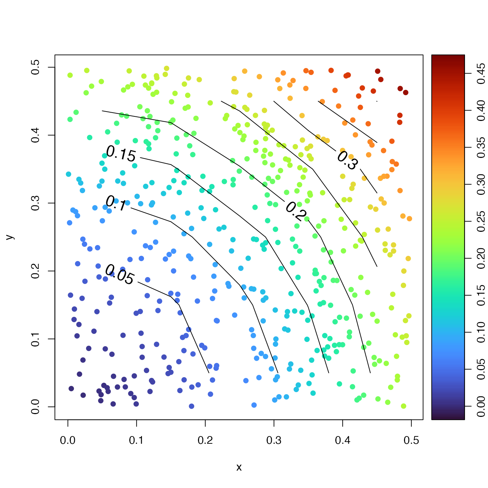

Average the values of a vector f(x,y) in bins defined on vectors
x and y. A common example might be averaging spatial data into
location bins.
Usage
binMean2D(
x,
y,
f,
xbreaks,
ybreaks,
flatten = FALSE,
fill = FALSE,
fillgap = -1,
include.lowest = FALSE,
na.rm = FALSE,
debug = getOption("oceDebug")
)Arguments
- x
vector of numerical values.
- y
vector of numerical values.
- f
Matrix of numerical values, a matrix f=f(x,y).
- xbreaks
Vector of values of
xat the boundaries between bins, calculated usingpretty(x)if not supplied.- ybreaks
Vector of values of
yat the boundaries between bins, calculated usingpretty(y)if not supplied.- flatten
a logical value indicating whether the return value also contains equilength vectors
x,y,zandn, a flattened representation ofxmids,ymids,resultandnumber.- fill, fillgap
values controlling whether to attempt to fill gaps (that is, regions of NA values) in the matrix. If
fillis false, gaps, or regions with NA values, are not altered. Iffillis TRUE, then gaps that are of size less than or equal tofillgapare interpolated across, by callingfillGapMatrix()with the supplied value offillgap.- include.lowest
logical value indicating whether to include
yvalues for which the correspondingxis equal toxmin. See “Details”.- na.rm
logical value indicating whether to remove NA values before doing the computation of the average. This is passed to
mean(), which does the work of the present function.- debug
an integer specifying whether debugging information is to be printed during the processing. This is a general parameter that is used by many
ocefunctions. Generally, settingdebug=0turns off the printing, while higher values suggest that more information be printed. If one function calls another, it usually reduces the value ofdebugfirst, so that a user can often obtain deeper debugging by specifying higherdebugvalues.
Value
By default, i.e. with flatten being FALSE, binMean2D()
returns a list with the following elements: xmids, a vector
holding the x-bin midpoints; ymids, a vector holding the y-bin
midpoints; number, a matrix holding the number the points in each
bin; and result, a matrix holding the mean value in each bin. If
flatten is TRUE, the number and result matrices are renamed
as n and f and transformed to vectors, while the bin midpoints
are renamed as x and y and extended to match the length of n
and f.
See also
Other bin-related functions:
binApply1D(),
binApply2D(),
binAverage(),
binCount1D(),
binCount2D(),
binMean1D()
Examples
library(oce)
x <- runif(500, 0, 0.5)
y <- runif(500, 0, 0.5)
f <- x^2 + y^2
xb <- seq(0, 0.5, 0.1)
yb <- seq(0, 0.5, 0.1)
m <- binMean2D(x, y, f, xb, yb)
cm <- colormap(f, col = oceColorsTurbo)
opar <- par(no.readonly = TRUE)
drawPalette(colormap = cm)
plot(x, y, col = cm$zcol, pch = 20, cex = 1.4)
contour(m$xmids, m$ymids, m$result, add = TRUE, labcex = 1.4)

par(opar)